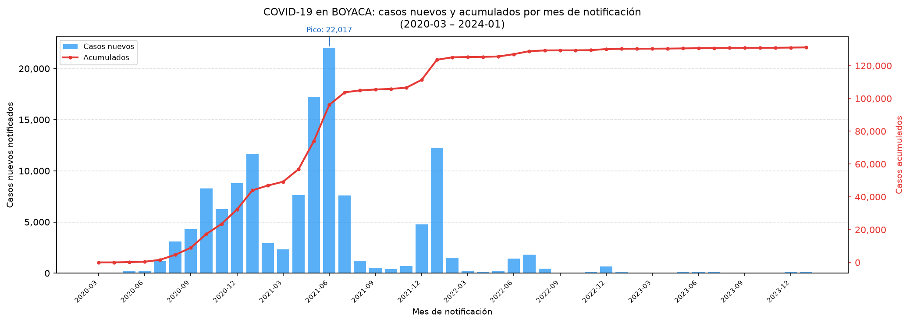
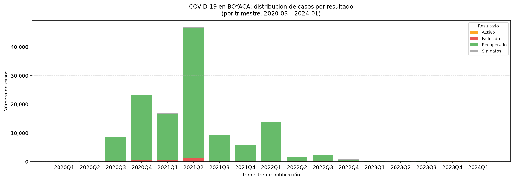

131,133
Casos positivos confirmados
(total del período)
(total del período)
2021-06
Mes con más notificaciones
(22,017 casos)
(22,017 casos)
4,011
Fallecidos registrados
(con fecha de muerte)
(con fecha de muerte)
3.06%
Tasa de letalidad global
(fallecidos / casos notificados)
(fallecidos / casos notificados)
Hallazgo principal:
En BOYACA se registraron 131,133 casos positivos
entre 2020-03 y 2024-01.
El pico de notificaciones ocurrió en 2021-06 con
22,017 casos en un solo mes.
De los 4,011 fallecidos con fecha registrada,
la tasa de letalidad global fue de 3.06%
(ver nota de limitaciones sobre posible subestimación).
Gráfico 1 — Casos nuevos notificados por mes y evolución acumulada

Gráfico 2 — Distribución de casos por resultado final (por trimestre)

Limitaciones del análisis
- El CSV es un corte estático; no refleja correcciones o adiciones posteriores a la descarga.
- Fecha de notificación es la fecha en que el caso ingresó al sistema, que puede ser posterior al contagio o diagnóstico real.
- La tasa de letalidad puede estar subestimada: algunas muertes se registran con rezago o en meses posteriores al caso original.
- El campo Recuperado no distingue entre alta clínica verificada y cierre administrativo por tiempo transcurrido (Tipo de recuperación = Tiempo).
- 834 registros (0,6 %) no tienen Fecha de inicio de síntomas; ese campo no se usa en estos gráficos.